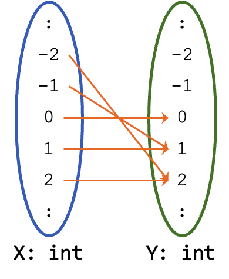

Unit 30: Side Effect-Free Programming
Learning Objectives
Students should
- appreciate the concept of functions as side-effect-free programming constructs and its relation to functions in mathematics.
- understand the importance of writing code that is free of side effects.
- understand how functions can be first-class citizens in Java through using local anonymous class.
- understand how we can succinctly use a lambda expression or a method reference in place of using local anonymous class.
- understand how we can use currying to generalize to functions with higher arity.
- understand how we can create a closure with lambda and environment capture.
Functions
Recall that, a function, in mathematics, refers to a mapping from a set of inputs (domain) \(X\) to a set of output values (codomain) \(Y\). We write \(f: X \rightarrow Y\). Every input in the domain must map to exactly one output but multiple inputs can map to the same output. Not all values in the codomain need to be mapped.
Let us illustrate this. We can represent the abs function as a mapping from int to int. So the domain is int and the codomain is int. If the value is negative, we map the value to its positive value. On the other hand, if the value is already positive, we map the value to itself. This shows that not all values in the codomain are mapped. However, all values in the domain must be mapped and, in fact, they are mapped to exactly one value in the codomain.

We know how to deal with mathematical functions very well. There are certain rules that we follow when we reason about functions. For instance, suppose we have an unknown \(x\) and a function \(f\), we know that applying \(f\) on \(x\), i.e., \(f(x)\) does not change the value of \(x\), or any other unknowns \(y\), \(z\), etc. We say that mathematical functions have no side effects. It simply computes and returns the value.
Why Side-Effect?
The term side-effect should be compared with the main-effect (or primary effect) of a function. Mathematically, a function is a transformation from one value to another value. So the main-effect is to return that value without modifying any of the input. Anything else is a side-effect. Side-effect includes:
- Printing to the screen or other I/O write operation.
- Modify the value of a field.
- Mutating the input arguments.
- Invoking other functions with side-effects.
- Throwing exceptions.
- etc.
Also note that observable behavior caused by the time taken for an operation to execute are ignored.
Another property of mathematical function is referential transparency. Let \(f(x) = a\). Then in every formula that \(f(x)\) appears in, we can safely replace occurences of \(f(x)\) with \(a\). Conversely, everywhere \(a\) appears, we can replace it with \(f(x)\). We can be guarantee that the resulting formulas are still equivalent.
Note that absence of side-effect does not guarantee referential transparency. The function that returns the current time has no side-effect (i.e., it does not change the time, does not print on the screen, etc) but it is still not referentially transparent. Invoking the same function at two different time produces different values. To be referentially transparent, a function must also be deterministic.
These two fundamental properties of mathematical functions allow us to solve equations, prove theorems, and reason about mathematical objects rigorously. We call functions that are both side-effect free and referentially transparent as pure functions.
Unfortunately, we can't always reason about our program the same way as we reason about mathematical functions. For instance, consider the line:
1 | |
where a is an instance of Array<T>. Suppose we know that a.get(0) is 5 for some a. When we reason about the behavior of our code, we cannot replace (mentally) every invocation of a.get(0) with the value 5. This is because the array a may not be immutable and therefore a.get(0) cannot be guaranteed to be the same.
1 2 3 | |
1 2 3 | |
The reverse should be true as well. Suppose we have a variable
1 | |
Then everywhere in our code where we use t, we should be able to replace it with a.get(0), and the behavior of the code should still be the same. This behavior is only guaranteed if a.get(0) has no side effects (such as modifying a field or print something to the standard output).
Since our Array<T> code is written rather well, we will illustrate it with the following example.
1 2 3 4 5 6 7 8 9 10 11 12 13 14 15 16 17 | |
Now suppose we have the following variable.
1 2 | |
The question now is can we replace val with ctx.getValue() everywhere? See the effect below.
1 2 3 4 5 6 | |
1 2 3 4 5 6 | |
To be able to reason about our code using the mathematical reasoning techniques we are familiar with, it is important to write our code as if we are writing mathematical functions -- our methods should be free of side effects and our code should be referentially transparent. Our program is then just a sequence of functions, chained and composed together. To achieve this, functions need to be a first class citizen in our program, so that we can assign functions to a variable, pass it as parameters, return a function from another function, etc, just like any other variable.
Pure Functions
Ideally, methods in our programs should behave the same as functions in mathematics. Given an input, the function computes and returns an output. A pure function does nothing else -- it does not print to the screen, write to files, throw exceptions, change other variables, modify the values of the arguments, etc. That is, a pure function does not cause any side effect and is referentially transparent.
Here are two examples of pure functions:
1 2 3 4 5 6 7 8 | |
and some examples of non-pure functions:
1 2 3 4 5 6 7 8 9 10 11 12 13 14 15 16 17 | |
A pure function must also be deterministic. Given the same input, the function must produce the same output, every single time. As we said before, this deterministic property ensures referential transparency.
In the OO paradigm, we commonly need to write methods that update the fields of an instance or compute values using the fields of an instance. Such methods are not pure functions. On the other hand, if our class is immutable, then its methods must not have side effects and thus is pure.
In computer science, we refer to the style of programming where we build a program from pure functions as functional programming (FP). Examples of functional programming languages include Haskell, OCaml, Erlang, Clojure, F#, and Elixir.
Many modern programming languages including Java, C++, Python, Rust, and Swift support this style of programming. As these languages are not designed to be functional, we cannot build a program from only pure functions. Java, for instance, is still an OO language at its core. As such, we will refer to this style as functional-style programming. We won't be able to write code consists of only pure functions in Java, but we can write methods that has no side effects and objects that are immutable, as much as possible.
Function as First-Class Citizen in Java
Let's explore functions as a first-class citizen in Java. We have seen some examples of this when we use the Comparator interface.
1 2 3 4 5 6 7 8 | |
First, let's take a moment to appreciate the beauty of the List::sort method. We can use this method to sort items of any type, in any defined order. We achieve the generality of types with generics, and the generality of sorting order through passing in the comparison function as a parameter. The latter is needed to write one sorting method for every possible sorting order for a list of strings, (sortAlphabeticallyIncreasing, sortByLengthDecreasing, etc..)
The comparison function here is implemented as a method in an anonymous class that implements an interface. We can think of an instance of this anonymous class as the function. Since a function is now just an instance of an object in Java, we can pass it around, return it from a function, and assign it to a variable, just like any other reference type.
Let's look at another example. Consider the following interface:
1 2 3 | |
Transformer<T, R> is a generic interface with two type parameters: T is the type of the input, R is the type of the result. It has one abstract method R transform(T t) that applies the function to a given argument.
We can use this interface to write any function that takes in a value and return another value. (Java has a similar interface called, unsurprisingly, java.util.function.Function<T, R>). For instance, a function that computes the square of an integer can be written as:
1 2 3 4 5 6 | |
We can write a method chain that composes two given computations together and
return the new computation:
1 2 3 4 5 6 7 8 9 | |
Note that the use of local class above is necessary in the method chain above. This is because we need to be able to invoke both t1 and t2. Since this local class is only used to connect both t1 and t2, we do not need to give it a name. Hence, anonymous class is suitable for this.
Lambda Expression
While we have achieved functions as first-class citizens in Java, the code is verbose and ugly. Fortunately, there is a much cleaner syntax to write functions that applies to interfaces with a single abstract method.
An interface in Java with exactly one abstract method (either declared in the interface or inherited) is called a functional interface. Both Comparator and Transformer are functional interfaces. It is recommended that, if a programmer intends an interface to be a functional interface, they should annotate the interface with the @FunctionalInterface annotation.
1 2 3 4 | |
A key advantage of a functional interface is that there is no ambiguity about which method is being overridden by an implementing subclass.
For instance, consider:
1 2 3 4 5 6 7 8 9 10 11 12 | |
You can see that there is much boilerplate code in the two functions above that we can remove. Since we are assigning it to a variable of type Transformer interface, we don't have to write new Transformer<>() { .. }. And since Transformer is an interface, there is no constructor. Since there is only one abstract method to overwrite, we don't have to write @Override public Integer transform(..) { .. }.
What remain after we eliminate the obvious boilerplate code are (i) the parameter Integer x and (ii) the body of transform, which is { return x * x; }. We can use the Java arrow notation -> to now link the parameter and the body:
1 2 | |
You might notice that the type of the parameter is redundant as well since the type argument to Transformer already tells us this function takes in an Integer. We can further simplify it to:
1 2 | |
or simply:
1 2 | |
where there is only one parameter.
Since the body has only a single return statement, we can simplify it further:
1 2 | |
Now, that's much better!
The expressions above, including x -> x * x, are called lambda expressions. You can recognize one by the use of ->. The left-hand side lists the parameters (use () if there is no parameter), while the right-hand side is the computation. We do not need the type in cases where Java can infer the type, nor need the return keyword and the curly brackets when there is only a single return statement.
lambda
Alonzo Church invented lambda calculus (\(\lambda\)-calculus) in 1936, before electronic computers, as a way to express computation. In \(\lambda\)-calculus, all functions are anonymous. The term lambda expression originated from there.
Method Reference
Lambda expression is useful for specifying a new anonymous method. Sometimes, we want to use an existing method as a first-class citizen instead.
Recall the distanceTo method in Point, which takes in another point as a parameter and returns the distance between this point and the given point.
1 2 3 4 5 6 7 | |
We can write our Transformer like this using an anonymous class:
1 2 3 4 5 6 7 | |
or using a lambda expression:
1 2 | |
but since distanceTo takes in one parameter and returns a value, it already fits as a transformer, and we can write it as:
1 2 | |
The double-colon notation :: is used to specify a method reference. We can use method references to refer to a (i) static method in a class, (ii) instance method of a class or interface, (iii) constructor of a class. Assume the following variable declaration
1 | |
Here are some examples of the double-colon notation and their equivalent lambda expression.
1 2 3 4 | |
The last example shows that the same method reference expression can be interpreted in two different ways. The actual interpretation depends on how many parameters h takes and whether h is a class method or an instance method. When compiling, Java searches for the matching method, performing type inferences to find the method that matches the given method reference. A compilation error will be thrown if there are multiple matches or if there is ambiguity in which method matches.
Not Effectively Final
Consider the two examples above again, reproduced below.
1 2 | |
1 2 | |
In the case of lambda, the variable origin is effectively final. On the other hand, the variable origin is not effectively final when using method reference. In fact, the following is allowed.
1 2 3 4 | |
Note that Line 4 is computing the distance with respect to the original origin at (0, 0). This is the famous Pythagorean triple 3, 4, 5. The distance between the point (0, 0) and the point (3, 4) is exactly 5. So although origin is not effectively final, the method reference origin::distanceTo is pointing to exactly the method distanceTo within this particular instance. So even if the variable origin is reassigned to another value, the method reference is still pointing to the old method.
Lexical This
In our discussion above -- as well as our mental model -- we think of lambda as a syntactic sugar for anonymous class. Which makes the explanation neat because we implement anonymous function (i.e., lambda) using something else that is anonymous.
Unfortunately, the reality is not so clean and tidy because Java compiler performs quite a number of optimizations that may cause such mental model to breakdown. The following is an example of when such mental model breakdown for a good reason.
Consider the following code:
1 2 3 4 5 6 7 8 9 10 11 12 | |
It is reasonable to assume that the following code compiles.
1 2 | |
And indeed, the code above compiles and the result of a.getX() is indeed 2. However, this is a violation of our mental model where lambda is converted into an anonymomus class. The rewriting of the code above using anonymous class will be the following:
1 2 3 4 5 6 7 8 9 10 11 12 13 14 15 16 17 | |
Unfortunately this code does not compile. In fact, we will get the following error
1 2 3 4 5 | |
The problem here is that the keyword this is referring to two different instances. In the case of lambda, it is referring to the instance of class A. On the other hand, in the case of anonymous class, this is referring to the instance of the anonymous class. So it causes the error because the anonymous class has no field called x.
However, in a way, it is reasonable when using lambda not to think about the presence of the anonymous class. This is what we meant by lexical this. So now we are faced with a slight conundrum because the mental model of having lambda as a syntactic sugar of anonymous class is useful but unfortunately wrong.
Due to its usefulness, we will keep using the mental model of lambda being a syntactic sugar for anonymous class when tracing using stack and heap diagram. However, the keyword this should be referring to the correct instance as per lexical this.
Curried Functions
Mathematically, a function takes in only one value and returns one value (e.g., square above). In programming, we often need to write functions that take in more than one argument (e.g., add above).
Even though Transformer only supports function with a single parameter, we can build functions that take in multiple arguments. Let's look at this mathematically first. Consider a binary function \(f: (X, Y) \rightarrow Z\). We can introduce \(F\) as a set of all functions \(f': Y \rightarrow Z\), and rewrite \(f\) as \(f: X \rightarrow F\), or \(f: X \rightarrow Y \rightarrow Z\).
The arrow \(\rightarrow\) is to be read from right-to-left. So \(f: X \rightarrow Y \rightarrow Z\) is equivalent to \(f: X \rightarrow (Y \rightarrow Z)\). But what does it actually mean? It means that instead of having a function that takes in two arguments, we can instead have a function that takes in one argument (typically the first argument) and return another function to accept the second argument.
A trivial example of this is the add method that adds two int values.
1 2 3 | |
This can be written as
1 | |
The way we read x -> y -> (x + y) is actually from right-to-left. So, it is equivalent to x -> (y -> (x + y)). We can then reason about this from innermost to outermost:
- Innermost:
y -> (x + y)is a function that takes in a single argumentyand returns the sum of(x + y). Let us call this functionf_inner. - Outermost:
x -> f_inneris a function that takes in a single argumentxand returns the innermost functionf_inner.
Combining the two, we can read it as follows:
x -> y -> (x + y)is a function that takes in a single argumentxand returns another function. The returned function takes in a single argumentyand returns the result of addingx(the argument accepted by the outer function) withy(the argument accepted by the inner function).
To calculate 1 + 1, we call
1 | |
Let's break it down again, add is a function that takes in an Integer object and returns a unary Function over Integer. So add.transform(1) returns the function y -> 1 + y. We could assign this to a variable:
1 | |
Note that add is no longer a function that takes two arguments and returns a value. It is a higher-order function that takes in a single argument and returns another function.
The technique that translates a general \(n\)-ary function to a sequence of \(n\) unary functions is called currying. After currying, we have a sequence of curried functions.
Curry
Currying is not related to food but rather is named after computer scientist Haskell Curry, who popularized the technique.
How is currying useful? Consider add(1, 1) -- we have to have both arguments available at the same time to compute the function. With currying, we no longer have to. We can evaluate the different arguments at a different time (as incr example above). This feature is useful in cases where some arguments are not available until later. We can partially apply a function first. This is also useful if one of the arguments does not change often, or is expensive to compute. We can save the partial results as a function and continue applying later. We can dynamically create functions as needed, save them, and invoke them later.
Instance Method as Partially Applied Class Method
One popular point of view is that an instance method is a partially applied static method with an additional first parameter called this. Take for instance an instance method C::f(A1, A2) in class C that takes in two parameters of type A1 and A2. This can also be viewed as a class method (i.e., with static keyword) of the form C::f(C, A1, A2). So instead of taking in two parameters, it takes in three parameters. We assume that the first parameter C is called this.
Of course, this view is just an approximation but it is a useful one.
Lambda as Closure
In the example, we showed earlier,
1 2 | |
the variable origin is captured by the lambda expression dist. Just like in local and anonymous classes, a captured variable must be either explicitly declared as final or is effectively final.
A lambda expression stores more than just the function to invoke -- it also stores the data from the environment where it is defined. We call such a construct that stores a function together with the enclosing environment a closure.
Being able to save the current execution environment, and then continue to compute it later, adds new power to how we can write our program. We can make our code cleaner with fewer parameters to pass around and less duplicated code. We can separate the logic to do different tasks in a different part of our program easier. Unfortunately, as the captured variables are effectively final, we cannot modify them so the power we gain is more restricted.
We will see more examples of this later.